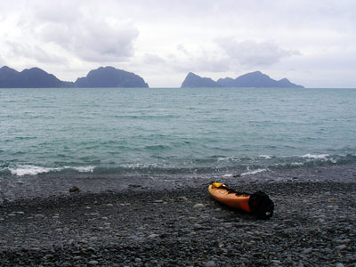
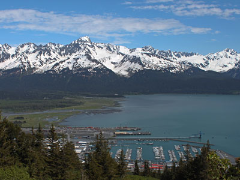

A small coastal port community surrounded by mountains and ocean waters that serves as a gateway to glaciers, marine wildlife, and outdoor recreation.
General Information
How to Get There
From Anchorage (125 mi): Take Seward Hwy (AK-1 S and AK-9 S) south for approximately 125 miles through Turnagain Arm and the Kenai Peninsula until reaching town at the end of the highway.
Overview
Seward is a port town at the head of Resurrection Bay on Alaska's Kenai Peninsula, about 125 miles south of Anchorage, and it is the gateway to Kenai Fjords National Park and the Harding Icefield. Backed by steep mountains and fronting a deep, ice-free bay, it is the southern terminus of the Alaska Railroad and a major cruise port. It is also known as Mile 0 of the Iditarod National Historic Trail and for the famous Mount Marathon Race on the Fourth of July.
Visitors come to Seward for boat tours of Kenai Fjords National Park, for the Exit Glacier and the Harding Icefield Trail, and for the Alaska SeaLife Center. They also come for fishing, kayaking, and wildlife watching in Resurrection Bay, and for the scenic drive along the Seward Highway.
History
The Sugpiaq and Dena'ina peoples lived in the area, and in 1792 the Russian Alexander Baranov built a shipyard in the bay, naming it Resurrection Bay for the day it was reached, Russian Orthodox Easter. The city of Seward was founded in 1903 by surveyors planning a railroad to the Interior and was named for William Seward, the secretary of state who negotiated the Alaska Purchase. The railroad was completed to Fairbanks in 1923, and Seward was the ocean terminus. On March 27, 1964, the Good Friday earthquake and its tsunamis destroyed much of the waterfront, and the city rebuilt.
Sightseeing and Popular Landmarks
Exit Glacier, the only part of Kenai Fjords National Park reached by road, has trails to the glacier's edge and a view of the retreating ice, and the Harding Icefield, a 700-square-mile ice cap, is reached by a strenuous trail. The Kenai Fjords boat tours show tidewater glaciers, whales, puffins, and sea otters. The Van Gilder Hotel, built in 1916, is a historic landmark, and the Seward Boardwalk and small boat harbor have shops and restaurants.
Culture and Museums
The Alaska SeaLife Center is a research aquarium and rehabilitation center with sea lions, puffins, and octopuses, and the Seward Community Library Museum shows local history. The city hosts the Mount Marathon Race on July 4, a mountain run that has been held since 1915, and the Silver Salmon Derby in August. The Fort McGilvray ruins and Caines Head have World War II history.
Parks
Kenai Fjords National Park protects glaciers, fjords, and an enormous icefield, and Chugach National Forest surrounds the town, with trails such as the Mount Marathon route and Lost Lake. Caines Head State Recreation Area has a coastal trail to a WWII fort, accessible at low tide, and Seward is a base for halibut and salmon fishing.
Seasons and Weather
Seward has a cool maritime climate. Summers are mild, with highs in the 60s°F, and winters are cool, with highs in the 20s and 30s°F and about 80 inches of snow. Rain is frequent, and the tourist season runs from May to September.
Things to Do
Discover the Gateway to Kenai Fjords National Park
Seward is a scenic coastal community located at the head of Resurrection Bay on the Kenai Peninsula. Surrounded by mountains, glaciers, fjords, and marine wildlife, the town serves as the primary gateway to Kenai Fjords National Park and is one of Alaska's premier destinations for outdoor adventure and wildlife viewing.
Visit Kenai Fjords National Park
Most visitors come to Seward to explore Kenai Fjords National Park. Boat tours departing from the harbor provide access to glacier-carved fjords, tidewater glaciers, seabird colonies, and marine wildlife. The park's dramatic landscapes make it one of Alaska's most visited national parks.
Explore Exit Glacier
Located about nine miles from downtown, Exit Glacier is the only road-accessible section of Kenai Fjords National Park. Visitors can take easy walks to glacier viewpoints, learn about glacial retreat through interpretive exhibits, or tackle the challenging Harding Icefield Trail for panoramic icefield views.
Visit the Alaska SeaLife Center
The Alaska SeaLife Center is Alaska's only public aquarium and marine wildlife rehabilitation facility. Visitors can observe sea lions, seals, puffins, fish, and other marine species while learning about marine conservation, research, and wildlife rescue efforts throughout Alaska.
Take a Wildlife and Glacier Cruise
Cruises from Seward provide opportunities to view humpback whales, orcas, sea otters, harbor seals, puffins, Steller sea lions, and seabird colonies while exploring the fjords and glaciers of Resurrection Bay and Kenai Fjords National Park.
Explore Resurrection Bay
Resurrection Bay offers sea kayaking, wildlife viewing, fishing charters, photography opportunities, and spectacular coastal scenery. The protected waters provide excellent opportunities to experience Alaska's marine environment up close.
Experience Seward's Harbor and Waterfront
The small boat harbor, waterfront parks, and downtown district offer restaurants, shops, museums, charter operations, and scenic walking opportunities. Visitors can watch fishing boats return to port while enjoying views of Resurrection Bay and Mount Marathon rising above town.
Top Trails
Harding Icefield Trail
Length: Approximately 8.2 miles round trip
Elevation Gain: Approximately 3,000 feet
Difficulty: Strenuous
One of Alaska's most famous hikes, the Harding Icefield Trail climbs above Exit Glacier to breathtaking views of the Harding Icefield. The route traverses forests, alpine meadows, and high mountain terrain before reaching views of seemingly endless ice stretching to the horizon.
Exit Glacier View Trails
Length: Short trails ranging from 0.5 to 2 miles
Elevation Gain: Minimal
Difficulty: Easy
A network of easy trails near Exit Glacier provides excellent opportunities to view the glacier and learn about glacial retreat. These routes are suitable for families and visitors seeking a shorter outdoor experience.
Mount Marathon Trail
Length: Approximately 4 miles round trip
Elevation Gain: Approximately 3,000 feet
Difficulty: Strenuous
Towering above Seward, Mount Marathon offers challenging hiking and spectacular views of Resurrection Bay. The mountain is famous for the annual Fourth of July Mount Marathon Race, one of Alaska's most iconic sporting events.
Tonsina Point Trail
Length: Approximately 4.2 miles round trip
Elevation Gain: Moderate
Difficulty: Moderate
This scenic coastal trail travels through lush rainforest and leads to viewpoints along Resurrection Bay. The route is popular for hiking, wildlife viewing, birdwatching, and photography.
Sources: Visitor information covering Seward attractions, Exit Glacier, Kenai Fjords National Park access, the Alaska SeaLife Center, harbor activities, wildlife viewing opportunities, and local recreation.
Additional information verified through Seward travel resources covering Resurrection Bay, glacier cruises, wildlife tours, Exit Glacier, the Alaska SeaLife Center, and major attractions throughout the Seward area. This article uses material from Wikipedia as well as information from official tourism and institutional sources. Key references include Visit Seward, National Park Service Kenai Fjords National Park, Alaska SeaLife Center, Travel Alaska, and National Weather Service Anchorage. Wikipedia material is from the article "Seward, Alaska", and is available under the Creative Commons Attribution-Share-Alike License 3.0.
Featured Locations and Trails

mdixon85, CC BY-SA 3.0, via Wikimedia Commons; Image Size Adjusted

Caines Head State Recreation Area
Coastal recreation area featuring rugged shoreline, forested trails, historic remnants, and access to remote backcountry landscapes.

Sujohn Das from Seattle, USA, CC BY-SA 2.0, via Wikimedia Commons; Image Size Adjusted

Kenai Fjords National Park
Vast coastal wilderness of glaciers, fjords, and icefields where rugged mountains meet the ocean and abundant marine wildlife thrives.

Eli Duke, CC BY-SA 2.0, via Wikimedia Commons; Image Size Adjusted

Mount Marathon
A steep, rugged mountain featuring a challenging hiking trail with dramatic elevation gain, loose terrain, and sweeping views of a coastal bay and surrounding wilderness.
Enrico Blasutto, CC BY-SA 4.0, via Wikimedia Commons; Image Size Adjusted

Resurrection Bay
A scenic fjord featuring deep glacial waters, abundant marine wildlife, and dramatic mountain-lined shores that offer opportunities for boating, kayaking, and wildlife viewing.